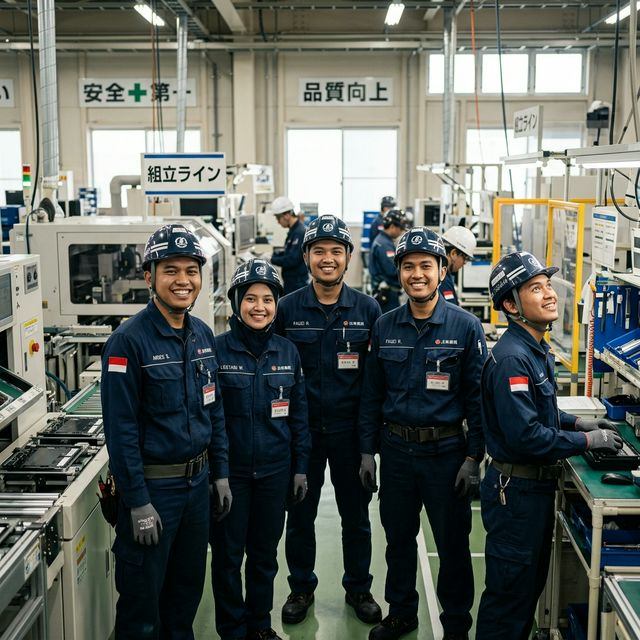

"Kemandirian Berawal dari Kedisiplinan"
Nikmati pengalaman belajar dengan nuansa Jepang yang kental. Kami membawa atmosfer Negeri Sakura ke dalam ruang kelas Anda di Madiun.
Membangun kemandirian melalui pelatihan intensif. Kami bukan sekadar LPK, kami adalah mitra perjalanan Anda menuju sukses di Negeri Sakura.
Nikmati pengalaman belajar dengan nuansa Jepang yang kental. Kami membawa atmosfer Negeri Sakura ke dalam ruang kelas Anda di Madiun.
Target Jepang
Status Legal Resmi
Ujian Bersertifikat

Wujudkan Mandiri!
Madiun - Japan Hub
"Kami melatih bukan hanya kemampuan bahasa, tapi juga mental dan etos kerja yang kuat agar Anda tidak hanya bekerja, tapi juga sukses dan dihormati di Jepang."
Terbuka Untuk Lulusan SMA/SMK Sederajat

Program Pemagangan Teknis untuk belajar sambil bekerja dengan kontrak 3 tahun.
Jalur Tenaga Kerja Berketrampilan Spesifik dengan gaji penuh dan hak setara pekerja lokal.
Proses transparan dan terukur menuju Jepang
Seleksi Administrasi
Bahasa & Kedisiplinan
Bertemu Perusahaan
Keberangkatan